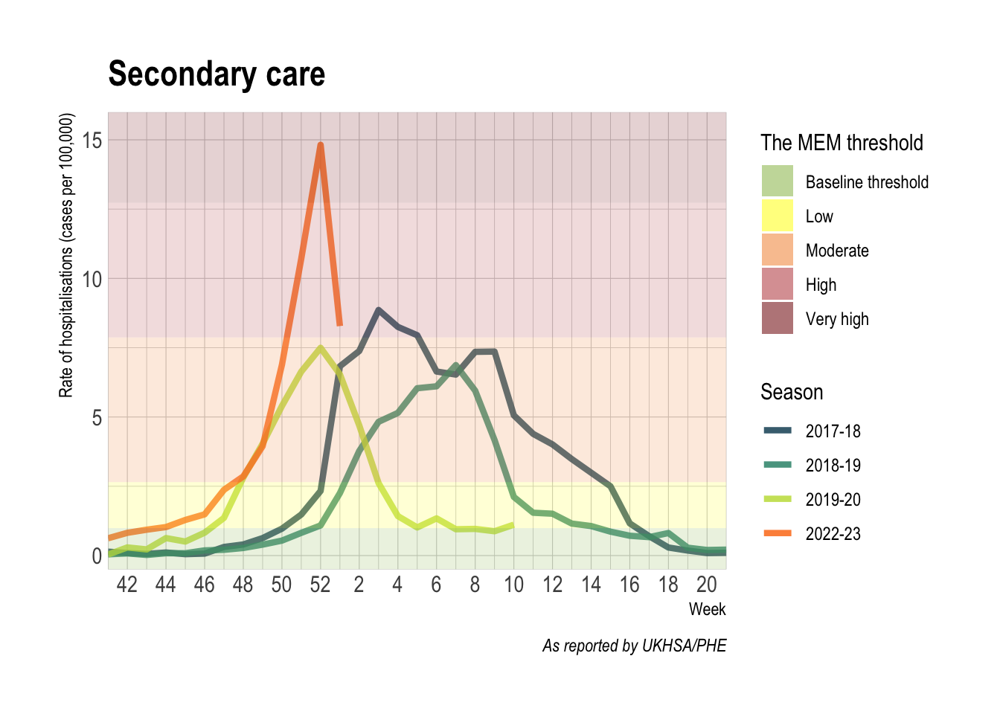
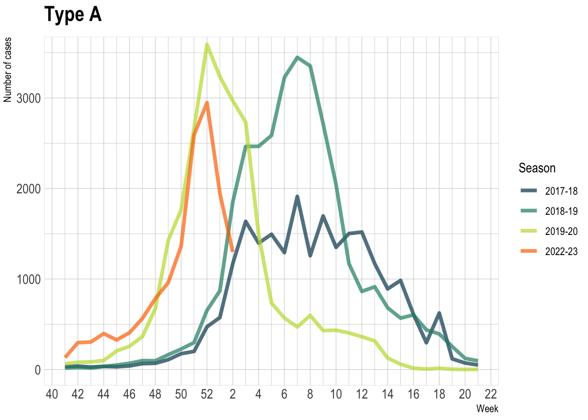
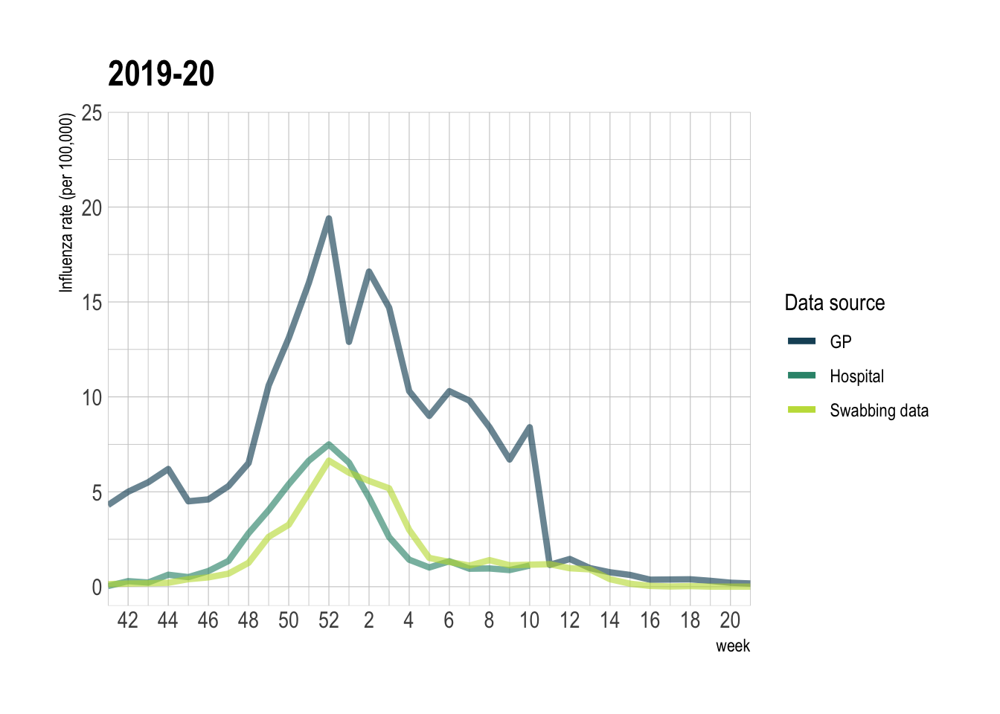
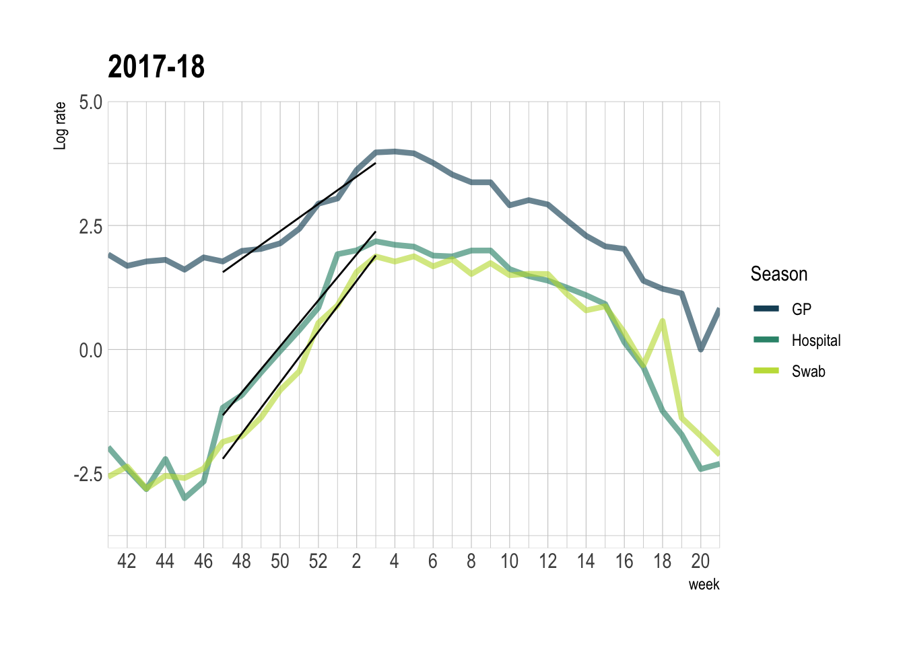
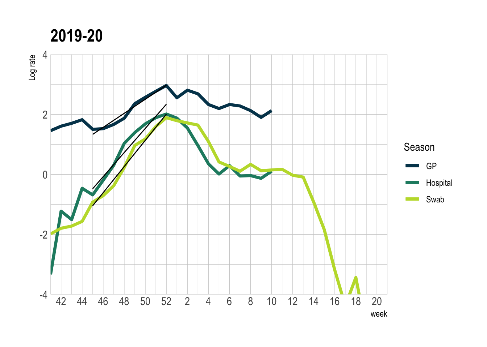
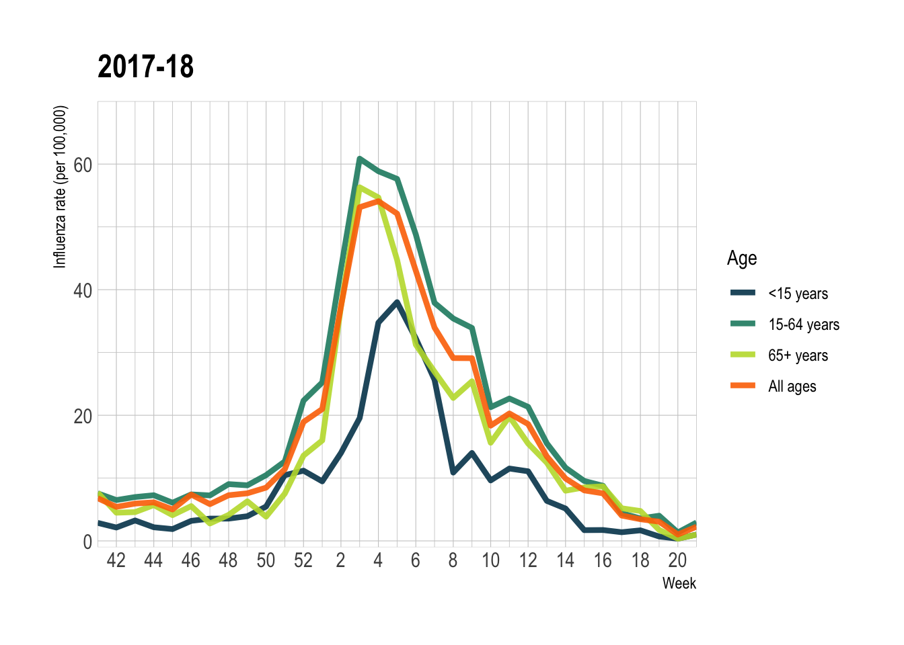
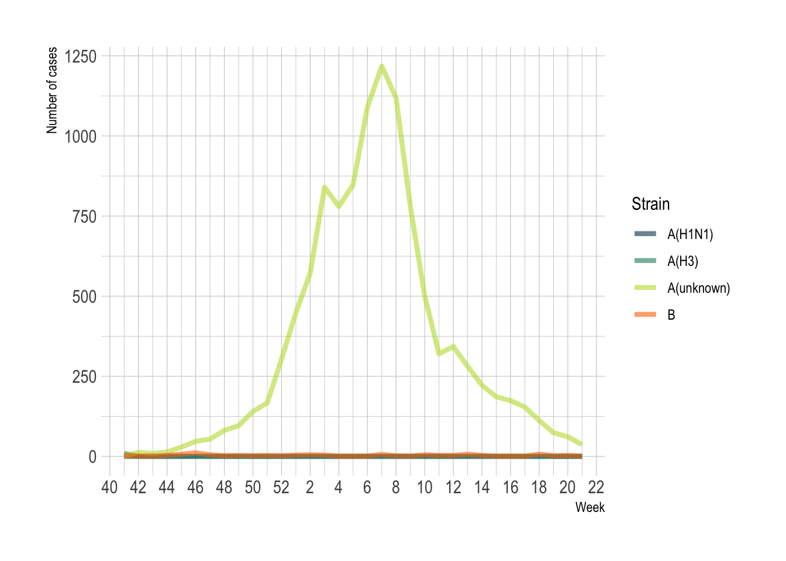

UKHSA report
Abstract
Influenza is a highly infectious disease caused by a virus of the Orthomyxoviridae family. The virus ( has multiple species, with type A and type B being predominant in humans. Up to 650,000 deaths yearly can be directly attributed to seasonal outbreaks of influenza worldwide (reference needed)
Progression of influenza is usually self-limiting. For most, symptoms last for 2~7 days. Severe cases might require hospitalisation, or can progress to death. This is a particular concern for at-risk groups, which include children <2 years of age; pregnant women; the elderly >65yo; and patients with comorbidities.
The UK’s influenza surveillance system is multi-faceted. It includes sources like weekly % of GP consultations presenting with influenza-like illnesses (ILI), or death registrations where the leading cause is influenza. Our topic of interest has been defined with this diversity as a componenet:
What is the temporal relationship between different influenza data sources (lab-confirmed infections, GP consultations, hospitalisations) in the UK, and have these changed in 2022/23 compared to the pre-pandemic years 2016-2019?
We hypothesise that there exists a temporal relationship between sources of surveillance. Statistical tools can then be applied to predict the timing and scale of a ‘later’ data source using an ‘earlier’ source. Additionally, different age groups can manifest at different time and scale, and one might be predictive of another. Additionally, we suspect changes in reporting procedures of respiratory infections post-covid may cause differences with pre-pandemic data
Data Processing
The data used in this project is publicly available on various governmental websites. Primary care data is published weekly by the RCGP Research and Surveillance Centre in the communicable and respiratory disease reports. Laboratory confirmed cases are reported weekly by UKHSA. Secondary care data is extracted from the UKHSA Severe Acute Respiratory Infection Watch (SARI Watch) system, updated weekly during the influenza season (week 40 - week 20 next year). Mortality data is reported weekly by the ONS. All cleaning and processing are done using the R language.
Analysis
At first glimpse, the peak for each data source does not differ much from each other in a given year.
Cross-correlation between two data sources can be measured using Spearman’s \(ρ\), a non-parametric test of correlation. To ascertain the pairwise time lag (if any), Spearman’s test is run repeatedly with a gradually increasing lag. The lag value associated with the best \(ρ\) is reported as the lag between given sources for a given year.
–page break–
Introduction
Progression of influenza is usually self-limiting. For most, symptoms last for 2~7 days. Severe cases might require hospitalisation, or can progress to death. This is a particular concern for at-risk groups, which include children <2 years of age; pregnant women; the elderly >65yo; and patients with comorbidities. [1].
Influenza is a highly infectious disease caused by a virus of the Orthomyxoviridae family. The virus (has multiple species, with type A and type B being predominant in humans. The World Health Organisation (WHO) estimates that between 290,000-650,000 deaths occur due to the respiratory virus, not including deaths not due to secondary infections caused by influenza [WHO2022?]. Like most viruses, influenza is highly mutable. It can change on its own (antigenic drift), or cross with other strains (antigenic shift) [2], possibly leading to uncontrolled extensive spreads causing an epidemic, such as the 2009 H1N1 pandemic [1].
The virus (family Orthomyxoviridae) has multiple species, with type A and type B being predominant in spreading among human [2]. They can be further classified by the H (as in Hemagglutinin) and N (as in neuraminidase) antigen present on the virus. Each year, a combination of the A subtypes and B type influenza circulates throughout the population at different proportions. Some evidence to suggest that H3N2 subtype is more severe than H1N1, leading to higher hospitalisation rates [cite]
After an incubation period, usually 1~3 days, the progression of the disease is self-limiting and symptoms might last 2~7 days [cite::green book]. Serious progression of the virus may lead to deaths in at-risk groups such as children (<2 y.o.), pregnant women, the elderly (>65 y.o.) and people with underlying medical conditions [3]. In a UK context, seasonal influenza circulation burdens the NHS in terms of availability of hospital beds and GP services [1]. Having more data to help plan for seasonal peaks can help alleviate pressure on vital services.

Who is the UKHSA and why are they interested
The UK Health Security Agency (UKHSA) was created as a successor to Public Health England in April 2021. Set up during the height of the COVID-19 pandemic, the UKHSA’s main priority is to tackle national health threats. They are responsible for the surveillance of diseases including influenza and manage the country’s vaccine programme.
Through studying the temporal nature of the data reporting of influenza, the UKHSA can better plan for the height of the influenza season within hospitals and plan the vaccination roll out. Vaccination is greatly beneficial as it averts between 180,000 and 626,000 cases of influenza per year in England, helping prevent between 5,678 and 8,800 premature deaths [4]. Furthermore, every death averted due to vaccination is estimated to save the NHS £50,610 [4].
In the UK, influenza data is reported by three main sources: through primary care data, hospitalisation data and through swabbing programmes. Having three separate data sources is a valuable to compare whether the peak in the seasonal spread is in the same week or whether any of the data sources lag the others - identifying a possible prediction of a peak in hospitalisations for example. Through the studying the swabbing data, it will aslo be beneficial to know what relationship the strain of influenza has on hospitalisation rate. Knowing the temporal nature of which age groups are beign affected when may help hospitals be better prepared for an oncoming wave of influenza cases.
Aims
We defined our main research question to address the issues described above.
Question: What is the temporal relationship between different influenza data sources (lab-confirmed infections, GP consultations, hospitalisations) in the UK, and have these changed in 2022/23 compared to the pre-pandemic years 2016-2019?
Hypothesis: We suspect that there is a time delay between one source of surveillance and another and the scale of the one that peaks earlier might be predictive of the later ones (GP consultations being before hospitalisations for example). Secondly we believe there could be changes in reporting procedures for respiratory infections post-COVID, such as an increase in swabbing. As children have more interactions in schools and nurseries, we would expect a larger peak for children before a peak in the older population. Finally, we expect the hospitalisation rate to change depending on which influenza strain is mainly in circulation during the season.
Methods
Data sources and extraction
Three main sources of influenza case data have been extracted from various places. Firstly, primary care data was reported by the Royal College of General Practitioners (RCGP) Research and Surveillance Centre communicable and respiratory disease reports. Cases of Influenza Like Illnesses (ILI) that present in participating GP practices are collected and reported for England and Wales [5].
Secondary care data was extracted from the UKHSA Severe Acute Respiratory Infection (SARI) Watch system from 2022 onwards and from the UK Severe Influenza Surveillance Schemes (USISS) prior. Swabbing data has been extracted from Public Health England reports on respiratory infections.

Mortality data is extracted from the UK Office for National Statistics (ONS) weekly bulletin of death registrations (England and Wales). The variable of interest is Deaths due to influenza and pneumonia (ICD J09-J18), and from 2020 onwards, Deaths involving to influenza and pneumonia (ICD J09-J18). These are defined by the occurrence of said phrase on either the first cause of death, or anywhere in the cause of death field.
Data Processing
Statistical Analysis
Cross-correlation
To study the temporal relationship between peaks in the influenza data, a cross-correlation method was chosen. Cross-correlation can be used to see if there two signals align. The method artificially shifts (or lags) one signal relative to another and calculates its correlation value. If there is a lag between signals, the cross-correlation will show a higher correlation for a signal that has been artificially shifted than for the original signal. This has been used as another way to measure whether or not the peak in influenza cases align, other than using sight of the plots alone.
To perform cross correlation, Spearman’s non-parametric test of correlation (denoted \(ρ\)) is more suitable than Pearson’s in this situation, since the latter requires all variable to be normally distributed. Spearman’s \(ρ\) uses the ranks (ranks of what??) to replace the actual values within each variable. It runs as long as the variables are equal in length. The measurement of cross-correlation between pairs of variables should be as follows. One variable, denoted \(x_{t}\), is pinned to the present. A lag of positive integer \(k\) is applied to the other variable \(y\) to generate \(y_{t}\),; \(y\_{t+1}\),; \(\ldots y\_{t+k}\) . For a given influenza season, Spearman’s test is run repeatedly between \(x\) and each version of \(y\). The lag that gives the best correlation, denoted \(\arg\underset{k}\max \,\rho(x,y_{t+k})\), is reported for each year for each pair of variables.
Moving Epidemic Method (MEM)
MEM is widely used by disease control agencies (including PHE and UKHSA) to model epidemics and generate threshold severity levels from historical data. First, the epidemic period in a season is identified as the minimum number of consecutive weeks with the maximum accumulated rates percentage (MAP). The season can then be split into pre-epidemic, epidemic, and post-epidemic periods. Within each, a given number of data points will be sampled. The number of sample remains at 30 regardless of availability. Assuming these fit into a normal distribution, their geometric mean will have confidence intervals. The upper bounds of \(\text{CI}_{50},\; \text{CI}_{90},\; \text{CI}_{95}\) act as the threshold values. Along with the cutoff for entering the epidemic period, these four values give us five bands: not-epidemic, baseline, and low, moderate, high, very high threat to the public. In this report, the plots for GP and hospitalisation use the values as-is from UKHSA publications for the respective seasons.
Reproduction Number \(R_0\)
Reproduction numbers can be used to calculate how much a disease will spread. It represents the number of new infections one positive case can reproduce. If \(R_0\) is greater than 1, the disease is growing, while if it is below 1, the spread is slowing. While \(R_0\) is used at the beginning of the spread of a new virus to a completely susceptible population, an effective reproduction number can be calculated for a population that contains some immunity, such as for an influenza virus. This can be inferred from the observed exponential growth rate seen at the beginning of an influenza epidemic. The observed reproduction number \(R\) can be found through the linear equation \(R = 1 + \dfrac{r}{b}\) , where \(r\) is the rate of exponential growth and \(b\) is the rate of leaving the infectious stage [6]. By approximating the beginning of the growth curves as \(N=ke^{\frac{rt}{b}}\) (where \(k\) is a constant), the value \(\dfrac {r}{b}\) can be found from the gradient when plotting \(\log (N)\) against \(t\).
In practice, log graphs were plotted and a linear model was fitted to the points at the beginning of the epidemic. Using the gradient, the \(R_{\text{eff}}\) was calculated for each data source, each season.
Results
To see view the trends in the data and to first explore it, case rate per 100,000 people was plotted against epidemic week. Lines for each season have been represented on of the same plot, each for a different data source.
Source


Figure 3 and 4: Figure 3 shows RCGP RSC reports of Influenza Like Illnesses in participating GP practices per 100,000 people across 4 influenza seasons from 2017-2018 to 2022-23 with 2020-2021 and 2021-2022 removed. Figure 4 show influenza cases reported by SARI watch and USISS Sentinel data for hospitalisations of patients with influenza per 100,000 people.

Figure 5: Lab-confirmed cases of influenza, stratified by influenza strain (A and B). Data reported from PHE/UKHSA lab confirmed cases of influenza.
In figures 3 and 4, we represent the Moving Epidemic Model thresholds against trends of primary and secondary care cases in the background.
We expected to see that over different seasons, peaks appear at different weeks. This is due to the complex dynamics of influenza spread which do not replicate every season. The magnitude of the peaks case rates however do indicate differing levels of severity in influenza between seasons.
This visualisation shows similarity in temporal characterisitcs between the 2017-18/2018-19 influenza seasons; and between the 2019-20/2022-23 influenza seasons. In primary care data, the peaks for the 2017-18 and 2018-19 influenza seasons occur at week 4 (with a subsequent peak in 2018-19 at week 7). We see a similar split in secondary care data. Secondary cases in 2017-18 peak at week 3, with a smaller peak across weeks 8-9. For 2018-19 the case rate peaks at week 7. In lab confirmed cases of influenza A, both 2017-18 and 2018-19 influenza seasons peak at week 7.
In the primary care data, the peaks for the 2019-20 and 2022-23 season occur in the previous year at 52 and 50 weeks respectively. In secondary care data and lab confirmed cases of influenza A, the peaks for seasons 2019-20 and 2022-23 occur in the previous year at week 52.
Lab confirmed cases of influenza A (Figure 5a) reinforce the backshift we see between the 2017-18/2018-19 seasons and the 2019-20/2022-23 seasons. The peak for the 2017-18 and 2018-19 season occur at week 7, similar to our finding s for secondary care and for reported primary care cases in the 2018-19 season. The peak case rate for both 2019-20 and 2022-23 seasons occur at week 52, in line with the secondary care cases for both seasons, and primary care data for 2022-23.
Lab confirmed cases of influenza B only appear to increase notable for the 2017-18 outbreak, with the cases for subsequent seasons not increasing to the same magnitude.
Its difficult to be confident in our post-covid analysis as the only data that we have available is the 2022-23 season, which at time of report writing is ongoing. The relationships observed on the brief analysis done amay not hold should the 2022-23 outbreak change in characteristic.
Season



| Peak cases across included flu seasons | |||
| Cases per 100,000 | |||
| Flu season | Sources of flu data | ||
|---|---|---|---|
| Primary care | Secondary care | Lab confirmed cases | |
| 2017-18 | 54.10 | 8.86 | 6.55 |
| 2018-19 | 23.10 | 6.87 | 6.19 |
| 2019-20 | 19.40 | 7.50 | 6.64 |
| 2022-23 | 31.27 | 14.82 | 5.43 |
For each season, cases of ILI reported by primary care sources dominate secondary care and lab confirmed case reporting. For 2017-18, the peak for primary care cases reported by the RCGP was 54.1 cases per 100,000. This was the greatest extent of the influenza epidemic as reflected by primary care data. The subsequent 2018-19 and 2019-20 seasons saw more modest peaks of 23.1 and 19.4 cases per 100,000 respectively. For the post-COVID influenza season, of data included at time of report writing, the current peak of primary care cases exists at 31.3 cases per 100,000. This is larger than the two pre-COVID influenza season data.
Secondary care and lab confirmed case rates mirror each other closely across pre-pandemic influenza seasons. The magnitude of impact between hospitalisation and lab-confirmed cases also appear to be similar in pre-pandemic data.
However, post-COVID, the peak for secondary care data reached 14.8 per 100,000 cases in week 12, whereas the maximum reported rate for lab confirmed cases reached 5.43 per 100,000 in the same week of data available. In pre-pandemic influenza seasons, the peaks for secondary care cases occured during weeks 15 (8.86 per 100,000 in 2017-18), 19 (6.87 per 100,000 in 2018-19) and 12 (7.50 per 100,000 in 2019-20). Lab confirmed cases peaked during weeks 17 (6.55 per 100,000 in 2017-18), 19 (6.19 per 100,000 in 2018-19) and 12 (6.64 per 100,000 in 2019-20). Its too early to determine whether this years influenza season pattern amongst secondary care and lab confirmed cases matches patterns of 2017-18 and 2018-19 or of 2019-20.
Log graphs and \(R_0\) value




To further investigate the temporal relationships between the data sources, effective reproduction numbers \(R\) were calculated to evaluate the difference in the rate of spread between data sources. The case rate per 100,000 was transformed using a natural logarithm and plotted against epidemiological week. The log plot resulted in a straight line during the initial exponential growth period and a tail after the peak of infections, as was expected from theory. The plots were evaluated to find which weeks to fit a linear model to. Using the linear model function in R, a line was overlaid on the log plots and coefficients of gradients for each of the lines were extracted. Using \(R = 1 + \frac{r}{b}\), as detailed above, the \(R\) was calculated.
The estimated \(R\) for each year and data source is detailed below. As expected at the beginning of a flu season, the R numbers are all above 1. It is noted that a higher reproduction number calculated for the data from hospitalisations than from GP consultations.
| Effective R values | |||
| Across flu seasons between 2017-18 and 2022-23 | |||
| Flu season | Sources of flu data | ||
|---|---|---|---|
| Primary care | Secondary care | Lab confirmed cases | |
| 2017-18 | 1.3 | 1.5 | 1.5 |
| 2018-19 | 1.1 | 1.4 | 1.4 |
| 2019-20 | 1.2 | 1.4 | 1.4 |
| 2022-23 | 1.3 | 1.4 | 1.3 |
| Note: Data removed for 2021-22 flu season due to effect of Covid-19 pandemic on flu cases | |||
Stratifying by age group




Using data provided by the RCGP, influenza data has been plotted stratified by age. This has been reported as ILI rate per 100,000, and broken down in to three age groups: <15 years, 15-64 years and 65+ years.
For the season 2017-18, there is a lag between the peaks of adults older than 15 years and children. The large growth of the epidemic this season begins at week 50 and peaks at week 3 for all ages except <15 years which peak at week 5. This may be due to the timing of the epidemic overlapping with UK school holidays, leading children to having less social interaction, therefore delaying their peak by two weeks.
For the season 2018-19 there appears to be a minor peak followed by a larger peak a few weeks later. This year, the second peak among the 65+ age group lags behind all other age groups by a week. This may be due to less socialising among the older age group.
The season 2019-20 shows multiple peaks with the expected dip over the holiday period (between weeks 51-1). As with the 2018-19 season, the 65+ age group lag behind the other age groups, with the largest peak for this age group two weeks after all other ages. There is also an evident spike at week 12 for this year. As this data is recording “Influenza like illness”, it can be assumed that this peak is due to the COVID-19 pandemic.
The current influenza season also shows a lag in growth among the 65+ group. The data however does not go up show where the peaks are, so we do not know the full picture. It is also shown that the under 15 years have a lower gradient after week 51 around the winter holidays begin.
Stratified by influenza strain type


This figure plots total recorded influenza cases by week in the influenza season (defined as the 40th week of the previous year to the 20th week of the subsequent), separated by strain of influenza for each included influenza season as recorded by Datamart scheme. Starting with the first studied season (2017-2018), it was clearly dominated by the type B influenza. The earliest rise in cases was observed in the A H3 subtype cases, starting around week 46, whilst the other strains present a delay of approximately one week. Moving forward in the season, week 49 brings increase in growth of the number of cases for type B and A H3 subtype. This was the key significant period for both A H3 subtype and B type, which went onto reach their peaks in week 2 and 3 respectively. Peak number of cases for A H3 subtype reached almost 350 and more than 600 cases for type B. Immediately after its peak, cases of type B influenza started decreasing gradually, with occasional increases in week 8, reaching 400 cases and in week 11 reaching approximately 250 cases. A similar trend was observed in the incidence of the A H3 subtype influenza which decreased in week 6 to 200 cases and fluctuated between 250-170 for the next six weeks. An important point is that the H1N1 type A starts to plateau around week 2 of 2018, reaching a point of approximately 50 cases daily, a threshold that was never surpassed again throughout the season. The unknown A type reaches its peak of 150 cases in week 6 to later fluctuate between 50-100 cases until week 15, when it gradually started to drop.
In the next figure (B) observed data covers the period from 2018 to 2019. For this particular season available data was strafed only by two types - A (unknown subtype) and B. During this season incidence of type B influenza reached a maximum of 11 cases in 45th week and did not pass the threshold of 10 after. Growth in incidence of type A influenza started at week 44 and continued, with a steeper rise starting in week 51 when over 300 new cases were recorded. This strain has dominated the season soaring at nearly 800 cases in week 3. After a slight dip during the next week, incidence of the unknown type A influenza peaked during week 7 with almost 1250 of new cases. It started plummeting until week 10 and gradually decreased until the end of the season.
During the season 2019 - 2020, cases of A H1N1, unknown type A and type B caused only minor burden in comparison to the A H3 subtype as seen in the figure C. All of the analysed strains apart from A H3 seem to be fluctuating around 10-30 cases between week 43 of 2019 and week 9 of 2020. Incidence of A H3 started to rise during the week 43 of the season and peaked in week 52. After its peak it has dropped rapidly to eventually level off during week 5 and fluctuate around the same incidence.
Post-pandemic season 2022 - 2023 is represented by figure D. We can observe that both type B influenza and the A H1N1 subtype represented only a fraction of all incidence, reaching approximately 50 cases each during 52nd week. The most dominant strain of the season was unknown type A influenza, which was on the rise since the first week of the season. During 50th week cases started soaring until incidence of the type A influenza reached its peak of almost 2300 new cases in week 52 of 2022. Second most dominant strain of the season - A H3 presented slower rise, starting in week 46 and peaking at 1250 new cases at the same time as type A - week 52. Data in the graph only represents incidence until week 5 of the year 2023 and that’s when we can observe a decline in all of the cases.
Discussion
** First paragraph **
Essential interpretation based on key findings –GB Brief for produced figures Possibly to most salient points
From analysis of the plots for each season stratified by the source of data, there is no apparent temporal difference in the peaks for rate of influenza cases. Although our sample size of four season is small, this appears to suggest that there is no temporal relation between different influenza data sources. While we see no visible lag between peaks in the population as a whole, the data was probed further to try to discover any other temporal relationship.
interpretation of the corr
The reproduction number has been estimated for each of the seasons and each of the data sources. Through the use of a linear model, the gradient has been extracted to then be used to calculate the effective \(R\) number. From the results calculated, it is clear that the estimate is larger for both hospitalisation data and swab data than for the GP data. The calculation here is a simplistic approximation for the reproduction number but does show that the spread of cases is slower for GP consultations which is more indicative of the general population as not everyone who goes to a GP for flu symptoms will be referred to hospital. This also gives some evidence towards a temporal relationship between GP consultations and hospitalisations, as knowing when there is a rise in the cases in GPs infers that there will be a large rise in hospitalisation following. As the calculation is not a complex model to estimate the reproduction number for influenza but does give a good estimate to be used in the report. Estimating the reproduction number for a virus such as influenza can be difficult due as it is uncertain the level of immunity among the population. While it may help throughout the report to have more granularity of data, it may not give a better estimate of the reproduction number. The results have assisted in showing a temporal relationship between GP cases and hospitalisations.
Strain stratified data discussion – SJ
ref:https://www.who.int/tools/flunet
2017-18
Stratification of the results by different strains has brought some interesting intel into our study. The 2017-2018 season was dominated by the B/ influenza. This finding is interesting in particular because according to WHO [7], the northern hemisphere has recorded increased incidence of the A/H1N1, which in the UK was only a secondary strain. Another interesting point is that peak incidence of type B influenza was delayed in the other countries of the northern hemisphere during the 2017 season. Within the UK, we have noted slight time advantage in the peak of A/H1N1 compared to type B.
2018-19
During the season 2018-2019, available to us data from Datamart was only stratified by type and not the subtype. According to the WHO, these years in the northern hemisphere have been dominated by strains A/H1N1. The most prevalent type B in the same area was of unknown lineage. Compared to the data from northern europe, we can see similarities in the shape distribution of the signal as well as we can see that throughout that season other strains of influenza were barely present.
2019-20
In the following season we could observe domination of the A/H1N1 which on the contrary was not prevalent in northern Europe, which has seen the activity of the unknown type A as well unknown type B influenzas. Peak of the season was delayed in comparison to the A/H1N1 and cumulative peak for northern Europe. Worth noting is that it has lined up with the peak for the A/H3 and type B influenza for the same region. Incidence of A/H3 and type B influenza in UK was delayed compared to the A/H1N1, however general incidence of A/H3 and B was minimal throughout the whole season.
2022-23
Season 2022-23 has started early, with the incidence of unknown type A leading the rising trend. Results correspond with data for northern Europe, sharing shape of distribution and dominating strain. It is worth noting that this is the first season in the analysis where UK data is consistent with data for northern Europe. In comparison with data for the countries of the whole northern hemisphere, incidence in the UK seems to plummet with slight delay.
Main piece of supporting evidence
How do these result fit within our question Ensure we’re writing to meet clients expectations
Comparison and contrast to previous studies – SJ
According to literature review, as of today research on the exact same topic has not been conducted. However, there are a number of sources which try to understand the relations between influenza metrics from before and after the COVID-19 pandemic. One of the most interesting comparisons would be the one with the Canadian article studying the effect of COV-19 pandemic on ILI related hospitalization and mortality in children [1]. Main findings conclude there was a significant drop in the number of cases in pediatric influenza hospitalisations post-pandemic. Similarly to our findings the report also mentions no AI related data for the period of the pandemic. This seems to be also a trend in different countries such as Italy, China and USA where barely any cases have been reported [2]. Although the exact explanation is not available, it is suspected that during that period ILI was underreported due to the main focus being COVID. This hypothesis however does not explain observations in China where incidence was low, despite the fact that type A and B influenza tests were conducted for patients with the suspicion of COVID-19 [3]. Another possible explanation apart from under-reporting is change in contact patterns as well as seasonal immunity perturbations that happened throughout 2019-2020.
Seasonality is a result of a complex interplay between previously mentioned contact patterns, host immunity as well as virus survival [4]. In terms of the post-pandemic period sources indicate that the coming season carries multiple unpredictable factors such as shadow of the COVID-19 pandemic, decreasing population immunity as well drop in genetic variability of influenza viruses [5]. Inconsistent COVID vaccination patterns i.e. varied coverage depending on a country, group age and time window, caused a general neglect in the rollout of other vaccines [6]. This shows some similarities with our findings, as seen in the appendix (Fig. Vacc) uptake rate in most of the groups dropped in 2020 compared to 2019, with only only risk group - pregnant women remaining at the same uptake rate. Previously mentioned disruptive patterns were described in South Africa during 2021, when season peaked unusually late during winter [7]. However, regular seasonality was restored in the following season, both dominated by A/H1N1.
Strengths – SJ What did we cover well in comparison to similar reports? How does this contribute to currently available knowledge? In general and from the client’s perspective? Implications of the study based on literature
Strengths – really not sure about this one so please edit/add if you have some ideas
One of the strong points of our report was the availability of multiple data sources. As opposed to similar literature, we have gathered data covering separate statistics (positive tests, primary and secondary care) in order to establish temporal relations between them. Our report contributes to currently available knowledge by presenting insight on the nature of post-COVID seasonality of influenza. Utilised methods (R0 of the log transformation) allowed to visualise and compare the rates of epidemic growth between different data sources. Allong with the stratification by risk groups we get a better picture which can be used as decision rationale for more allocation of public resources.
Limitations What questions could not be answered and why?(age? Data missing? Limited access?) Methods we could not use but considered? (arima? Forecast? Granger test? [violation of the assumptions - what assumptions and why is it violated])
Limitations
Unexpected findings What things have come up that we did not expect? Counter intuitive patterns? Maybe an unexpected season in terms of strain dominance? Lack of delay between the sources?
Last paragraph
Hypothesis and purpose of the study summary
Hypothesis and purpose of study – GB
Proved or disproved? What might be the reasons? What can be learned for the results?
The hypothesis to the main research question was that we expected there to be a temporal difference between peaks from different data sources, specifically that hospitalisations may lag behind GP cases. From the plots for each season stratified by the source, other than in 2022-23, there is no clear change in the timing of the peaks. The maximum rate of cases occurs on the same week for each of the remaining seasons investigated in this report. Our hypothesis was on the basis that influenza symptoms take time to become severe enough to result in hospitalisation, leading to a lag. However, it is known that the incubation period of influenza is between 0.6 and 1.4 days and most people will recover within a week [7]. Due to this, it is not so surprising that there is no obvious lag between data sources as the time frame may not small enough to capture any differences between peaks. Any delay in reporting cases from any of the sources would add to this opacity. Therefore, there is no temporal relationship present in the data presented in this report for a population as a whole. GP consultations are not considered to be a good predictor of hospitalisation cases for influenza.
With regards to the secondary research questions and hypotheses, the data gives more insight. When RP consultations are stratified by age group, there is a clear lag between the 65+ years and the remaining age groups in all years other than the season 2017-18. However, the one season where <15 years lag behind the other age groups can be explained due the peak of infections happening over the holiday period when schools are closed. When schools are closed, younger people have fewer social contacts and are therefore less likely to spread influenza. A delayed peak occurring after the return to school, as shown in the plots, is to be expected. Referring back to the seasons 2018-19, 2019-20 and 2022-23, the lag of the age group 65+ is also to be expected. For a similar reasoning, 65+ age group will tend to have fewer social interactions than children, so will have a slower spread of influenza. Therefore, knowing that cases are rising among <15 years can help predict a peak in the 65+ age group, who also would tend to be more severely affected by influenza.
Future work
It has been reported in the past that different strains of influenza may have a different distribution between different age groups [8]. It could be useful in the future to have cases reported by both strain and age group so that any differences can be studied. This may also contribute to a temporal difference and could help prepare for rise in cases as some strains have a higher hospitalisation rate than others.
As COVID-19 becomes endemic within the population, it will be important for the UKHSA to know the temporal relationship between both diseases. COVID combined with influenza has potential to cause many hospistalisations. Therefore, studying a temporal relationship of influenza and COVID-19 for each data source could help preparedness.
Due to the UKHSA being a UK based agency, the data used within this report is from England. Influenza circulates around the world and is tracked by many governmental bodies. While acknowledging the different structure of the UK health system (with primary care referrals), it may also be worth studying temporal differences between influenza data sources in other countries.
Study significance –GB Again on how UKHSA could use the result for the good of the public New questions that emerged Expanded way of looking at the initial question?
Questions that could not be answered –GB Limitations of methods/data? (age?, different reporting patterns)
Potential future research Ways of taking the project further if time was not an issue Also consequences of unhalted burden on NHS How can research build on our findings?
Take home/conclusion
Influenza is a very difficult disease to study and predict due to reasons include the different strains, antigenic shift and the unknown level of immunity in a given season. While data for previous seasons can be studied, the complex nature and changes from season to season mean it is difficult to give a firm prediction of what could happen in the future. Although we see no noticeable lag in peaks between any of the data sources, there is a lag in GP cases among different age groups. There is also a noticeable difference also in the rate of spread reported between GP cases and hopsitalisation cases.
Granularity of Data
Appendix A - Team Statement
I think we should each note down which R scripts we’ve worked on, even if they overlap. Obviously we’ve all worked on this document, the presentation and the source data file but we could break it down even further.
I hereby declare and confirm with my signature that this report, along with the code and graphics in this project, is the combined effort of our group. Everyone has made significant contributions in their own ways, based on their expertise in one speciality or another. I acknowledge that this report is submitted as coursework to be assessed, and the team members are equally responsible for the success or failure of any one part. This report is my own work, except where the use of other people’s works are cited.
Team Member: GB, AC, SJ, HL
Appendix B - Variables and Data Sources
All data sources and scripts can be found in our shared github : https://github.com/gabrielbattcock/data_challenge.